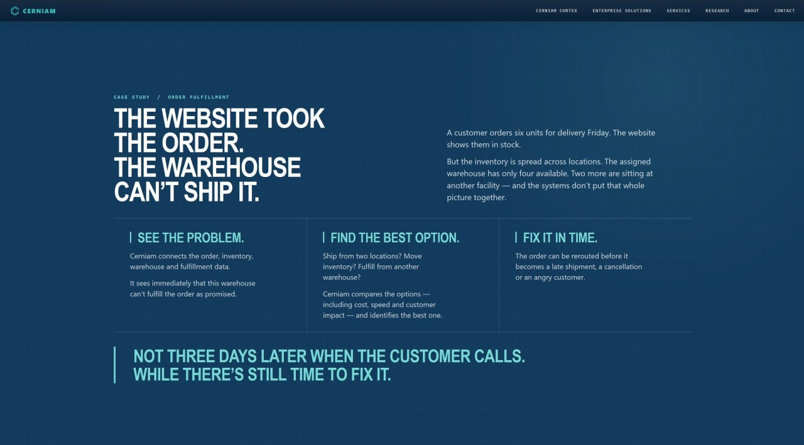

001
Case study / Order fulfillment
The website took the order.
The warehouse can’t ship it.
ParkedReview needed

Working note
Review and refine the case.
The conflict and visual hierarchy are strong. The operational evidence, decision rationale, and outcome proof need another pass before this returns to the main narrative.
01 / Keep
What has earned its place
- The opening conflict is immediate and human.
- The three-stage sequence gives the story a clear see → choose → act rhythm.
- The closing line makes time—not hindsight—the value proposition.
- The grid, hierarchy, and restrained teal emphasis belong to the Cerniam system.
02 / Refine
What the case still owes us
- Show the operational state that makes the website’s stock promise incomplete.
- Make the option comparison and selected action more explicit.
- Explain why the chosen option wins across service, speed, cost, and customer impact.
- Tie “fix it in time” to a verified outcome—not a placeholder metric.